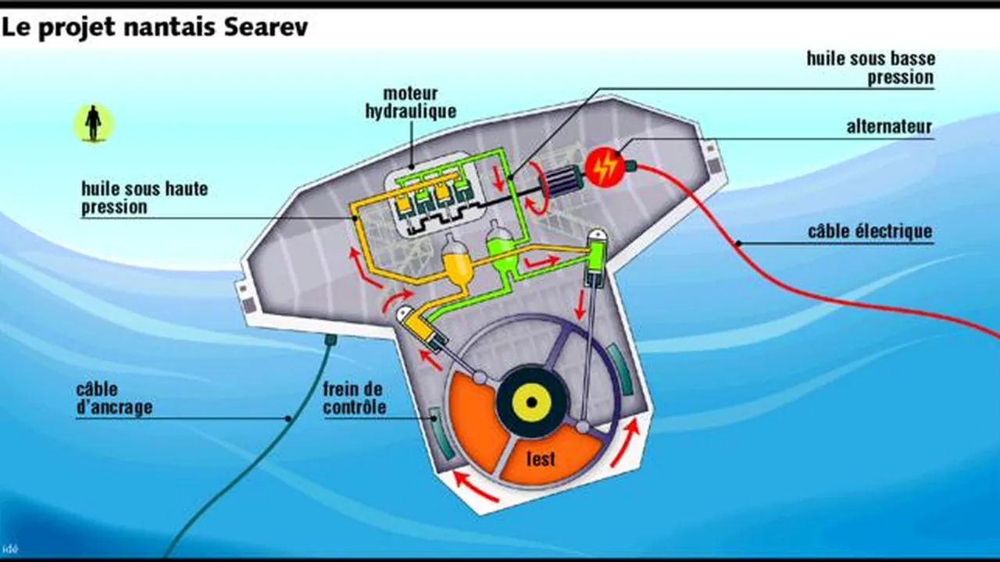

TIPE - Modélisation du Searev
Contexte
Pendant mes deux années de classe préparatoire aux grandes écoles, j'ai travaillé sur un projet de TIPE (Travail d'Initiative Personnelle Encadré) dans le cadre du thème « Enjeux Sociétaux ». J'ai choisi de modéliser numériquement le Searev (Système Électrique Autonome de Récupération de l'Énergie des Vagues), un dispositif innovant pour convertir l'énergie de la houle en électricité.
Principe du Searev
Le Searev est une bouée flottante contenant une masse pendulaire. Le mouvement oscillatoire de la houle fait basculer la bouée, mettant en mouvement le pendule. L'énergie mécanique de ce pendule est ensuite convertie en électricité via un générateur.

Approche numérique
Mon objectif était de modéliser ce système dynamique et d'étudier l'efficacité de la conversion d'énergie en fonction des paramètres de la houle et du dispositif. J'ai mis en œuvre une simulation numérique en Python et réalisé un prototype.